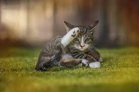
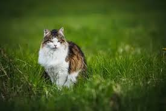
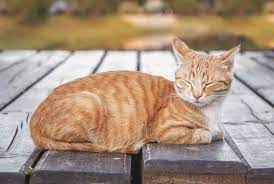
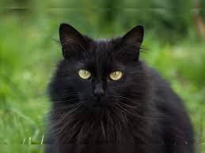
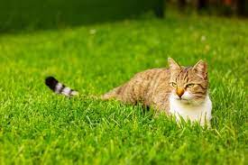

Pluto is a male American Shorthair. He is really playful, loves get daily scratches and he sit on your lap all day.

Muffin is a female Turkish Angola. She may look extremely mean but we can assure you she is the friendliest cat ever.

Luna is a female American Shorthair. She is still fairly new to the shelter but we have realized shes enjoys crawling.

Nugget is a female Orange Cat. Shes a has the classic characteristics of an orange cat and will blinks in all the photos.

Loki is Persian Black cat. He is more calm and quite than our other cats and values his alone time.

Sprocket is a Light Brown American Shorthair. She's fairly shy but shes a great comfort pet.